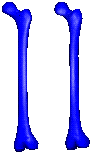
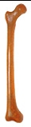

|

|
THE
STANDARDIZED FEMUR PROGRAM HOME PAGE
|
TABLE OF CONTENTS
What is New?
- New distribution model: the SF Program is now distributed as part
of the BEL Repository. The License Agreement is substantially unchanged.
- The Standardized Femur version 2.3:a new model is available which
should represent an significant improvement over the previous version. It has been
imported in Ansys, Patran and Marc without any problem, closed as a solid and meshed
without any additional editing. Additionally the surface patches have been partitioned
in a way which should simplify the generation of a solid mapped mesh. Last, but not
least, the accuracy of the reconstruction has been improved.
- The Muscle Standardized Femur version 1.0: is a new model, based
on the Standardise femur geometry, on which we have identified the most likely location
of muscle insertions as separate surface patches.
What is the Standardized Femur?
The standardized femur is the 3D surface model of a femoral bone analogue
(mod. #3103) produced by Pacific Research Labs (Vashon Island, Washington, USA) which
is becoming de facto a standard in experimental orthopaedic biomechanics.
Much experimental data based on this bone analogue are becoming available in the
literature; we propose to adopt this geometry as a reference for orthopaedic Biomecanics
finite element studies. This will produce two advantages:
- Being based on a common geometry, it will be easier to compare results from different
FEM studies.
- Every researcher building FE models will use data from experimental tests available
in literature to calibrate his model.
What is the Muscle Standardized Femur?
Related Publications
Base Biblio Reference
- Viceconti,
M., Casali M., Massari B., Cristofolini, L., Bassini S. and Toni, A., The 'Standardized
femur program'. Proposal for a reference geometry to be used for the creation of
finite element models of the femur, J. Biomech., 1996a, Vol. 29, 1241.
Validation works on composite femurs and related material
- Cristofolini L., Viceconti M., Cappello A., Toni A. (1996) Mechanical validation
of whole bone composite femur models J. Biomechanics 29(4): 525-535.
- Cristofolini L., Cappello A., Viceconti M., Toni A., Giunti A. (1994) "A
validation of synthetic femur models in relation with comparative stress shielding
studies of hip stems", 2nd World Congress of Biomechanics, Amsterdam.
- Cristofolini L., Viceconti M., Toni A., Giunti A. (1993) "Can composite
femurs replace cadaveric femurs in in-vitro testing?", Transactions of the 19th
annual Meeting of the Society for Biomaterials, Birmingham, Alabama: 125.
- Viceconti M., Cristofolini L., Toni A., Giunti A. (1992) "Transversal compliance
of synthetic femurs". Biomaterials and Intelligent Materials C.N.R. Meeting,
Brindisi.
- Szivek, J.A., Thomas, M., Benjamin, J.B. (1993) Characterisation of a synthetic
foam as a model for human cancellous bone. J. Appl. Biomaterials 4, 269-272.
- Szivek, J.A., Gealer, R.L. (1991) Comparison of the deformation response of synthetic
and cadaveric femora during simulated one-legged stance. J. Appl. Biomaterials 2,
277-280.
- Szivek, J.A., Weng, M., Karpman, R. (1990) Variability in the torsional and bending
response of a commercially available composite femur. J. Appl. Biomaterials 1, 183-186.
- Uta, S. (1992) Development of synthetic bone models for the evaluation of fracture
fixation devices. Nippon Seikegeka Gakkai Zasshi 66(11), 1156-1164.
- Beals, N. (1987) Evaluation of a composite Sawbones femur model. Research Report
ML-87-25. Richards Medical Company, Memphis, Tennessee.
- Hilado, C.J. (1974) Glass reinforced epoxy systems. Technomic Publ., Westport
Connecticut.
Experimental studies with composite femurs
- Cristofolini, L., Viceconti, M., Toni, A. and Giunti, A. Influence of thigh muscles
on the axial strains in a proximal femur during early stance in gait. J Biomechanics
28:5:617-624, 1995.
- Ramer, M., Viceconti, M., Toni, A., Pipino, F. and Giunti, A. Biomechanical validation
of a new nail-plate for the repair of stable proximal femoral fractures. Arch Orthop
Trauma Surg 116:137-142, 1997.
- Bianco, P.T., Bechtold, J.E., Kyle, R.F., Gustilo, R.B. (1989) Synthetic composite
femurs for use in evaluation of torsional stability of cementless femoral prosthesis.
Proc. Biomechanics Symposium (Edited by Torzilli, P.A., Friedman, M.H.), pp.297-300
ASME AMD.
- Cristofolini L., Cappello A., Toni A. (1994) "Experimental errors in the
application of photoelastic coatings on human femurs with uncemented hip stems",
Strain 30(3): 95-103.
- Cristofolini, L., Cappello, A., McNamara, B.P. and Viceconti, M. A minimal parametric
model of the femur to describe axial elastic strain in response to loads. Med Eng
Phys 18(6):502-514, 1996.
- Cristofolini L., Mcnamara B.P., Cappello A., Toni A., Giunti A. (1994) "A
new protocol for stress shielding tests of hip prostheses", 2nd World Congress
of Biomechanics, Amsterdam.
- Cristofolini L., Mcnamara B.P., Cappello A., Toni A. (1995) "Errors in stress-shielding
evaluation of cementless hip stems". 15th I.S.B. Congress, Jyvaskyla, Finland.
- Harman M.K., Cristofolini L., Toni A., Viceconti M., Giunti A. (1994) "A
reproducible in-vitro protocol for initial hip stem torsional stability", 2nd
World Congress of Biomechanics, Amsterdam.
- Harman, M.K., Toni, A., Cristofolini, L., Viceconti, M. (1995) Initial stability
of uncemented hip stems: an in-vitro protocol to measure torsional interface motion.
Medical Engineering and Physics 17(3): 163-171.
- McKellop, H., Ebramzdeh, E., Niederer, P.G., Sarmiento, A. (1991) Comparison
of the stability of press-fit hip prosthesis femoral stems using a synthetic model
femur. J. Orthop. Res. 9, 297-305.
- Otani, T., Whiteside, L.A., White, S.E., McCarthy, D.S. (1993b). Effect of femoral
component material properties on cementless fixation in total hip arthroplasty. J.
Arthrop. 8, 67-74.
- Otani, T., Whiteside, L.A., White, S.E.. (1993a) Strain distribution in the proximal
femur with flexible composite and metallic femoral components under axial and torsional
loads. J. Biomed. Materials Res. 27, 575-585.
Studies with models of the composite femur
- Mcnamara B.P., Cristofolini L., Toni A., Taylor D. (1995) "Evaluation of
experimental and finite element models of synthetic and cadaveric femora for pre-clinical
design-analysis", J. Clinical Materials 17, 131-140.
- Mcnamara B.P., Cristofolini L., Toni A., Taylor D. (1994) "Effect of bone-prosthesis
interface bonding on stress shielding in cementless THA.", Advances in Bioengineering
1994, Askew M.J. Ed., ASME-BED, New York publ.: vol. 28 201-202
- Mcnamara B.P., Viceconti M., Cristofolini L., Toni A., Taylor D. (in press) "Experimental
and numerical pre-clinical evaluation relating to total hip arthroplasty", Recent
Advances in Computer Methods in Biomechanics and Biomedical Engineering, Middleton
J., Pande G.N., Williams K.R. Eds., Books & Journals International publ., Swansea.
- Mcnamara B.P., Cristofolini L., Toni A., Taylor D., Giunti A. (1994) "Stress
shielding predicted using a composite material femur", 2nd World Congress of
Biomechanics, Amsterdam.
- Mcnamara B.P., Cristofolini L., Toni A., Taylor D. (1994) "Effect of bone-prosthesis
interface bonding on stress shielding in cementless THA", ASME Winter Annual
Meeting, Chicago.
- McNamara B. P., Cristofolini L., Toni A. and Taylor D. Relationship between bone-prosthesis
bonding and load transfer in total hip reconstruction. J.Biomechanics vol.30 N. 6,
1997, pp. 621-630.
- Viceconti, M., L. Bellingeri, et al. (1998). A comparative study on different
methods of automatic mesh generation of human femur. Medical Engineering &
Physics 20: 1-10.
Methodology studies used to create the New Standardized Femur
- Viceconti, M., C. Zannoni, et al. (1999). CT data sets surface extraction for
biomechanical modelling of long bones. Computer Methods and Programs in Biomedicine
59: 159-166.
- Viceconti, M., C. Zannoni, et al. (1998). TRI2SOLID: an application of reverse
engineering methods to the creation of CAD models of bone segments. Computer Methods
and Programs in Biomedicine 56: 211-220.
- Viceconti, M., C. Zannoni, et al. (1998). CT-scan data acquisition to generate
biomechanical models of bone structures. Computer Methods in Biomechanics &
Biomedical Engineering - 2. J. Middleton, M. J. Jones and G. N. Pande. Amsterdam,
Gordon & Breach: 279-288.
- Zannoni, C., A. Cappello, et al. (1998). Optimal CT scanning plan for long bone
3D reconstruction. IEEE Transactions on Medical Imaging 17(4): 663-666.
Technical data

The following are some information on the physical object from which the standardized
femur model has been derived. This is composite material femoral bone analogue designed
to mimic the mechanical behaviour of a human femur under the action of external loads.
Manufacturer
Pacific Research Laboratories, Inc. (under the brand Sawbones)
P.O. Box 589
Vashon Island, WA 98070
Phone: **-1-206-463-5551
Fax: **-1-206-463-2526
Dealer in Europe
Sawbones Europe AB
Krossvergatan 3
S-21616 Malmo, Sweden
Phone: **-46-40-163040
Fax: **-46-40-164842
Materials
"Cortical bone": glass fibre reinforced epoxy
"Spongy bone": polyurethane foam.
Anatomies
There are two sizes available, both normally "left" femurs:
| TYPE |
Length (mm) |
Canal Diameter (mm) |
Model |
|
Adult composite Femur
|
480
|
15.5
|
3106
|
|
Adolescent composite Femur
|
420
|
13.0
|
3103
|
Material properties (as reported by the manufacturer):
|
Glass fibre/epoxy |
Polyurethane foam |
|
Compressive strength
|
not indicated
|
4.83 -13.8 MPa
|
|
Compressive modulus
|
not indicated
|
103 - 413 MPa
|
|
Tensile strength
|
172.2 MPa
|
3.44 - 10.3 MPa
|
|
Tensile modulus
|
18600 MPa
|
55.1 - 413 MPa
|
|
Flexural strength
|
275.6 MPa
|
5.51 - 17.2 MPa
|
|
Flexural modulus
|
14200 MPa
|
13.8 - 68.9 MPa
|
|
Poisson's ratio
|
0.3
|
not indicated
|
|
Hardness
|
Shore D 80
|
Shore D 45-55
|
Model history and Accuracy
| std v1.0 |
This is the original SF model; it was based on parallel contours and had some major
problems at the bifrucations which made it very difficult to manage. |
| fs329 |
This is the first version created by non-parallel contours; poor accuracy in the
export function of our CAD made most of the surfaces unstitched. |
| std v2.0 |
This is the last public version; it has minor modifications toward a simplification
of the surface patches (but with a larger error). |
| std v2.1 |
We finally got our new CAD: Unigraphics. This is the first SF model obtained under
this program. Not distributed. |
| std v2.2 |
Re-partitioning of the solid to simplify mapped meshing |
| std v2.3 |
Currently available model; a few driving curves have been added to achive a better
accuracy. |
Each SF model is verified against a second set of 20 CT contours which has not
been used to generate the model (off-plane accuracy); in a previous study we found
these contours to be accurate to the pixel size (0.3 mm in this case). For each contour
the solid model is sliced at the same level and the max. distance between the two
contours is recorded. These are the results,, expressed in millimetres, for the mentioned
models:
| |
std v1.0
|
fs329
|
std v2.0
|
std v2.1
|
std v2.2
|
std v2.3
|
| RMSE |
2.18
|
1.08
|
1.22
|
1.92
|
1.13
|
1.09
|
| e90% |
3.18
|
1.41
|
1.55
|
1.47
|
1.41
|
1.47
|
| max error |
5.14
|
3.21
|
3.85
|
3.58
|
3.41
|
2.73
|